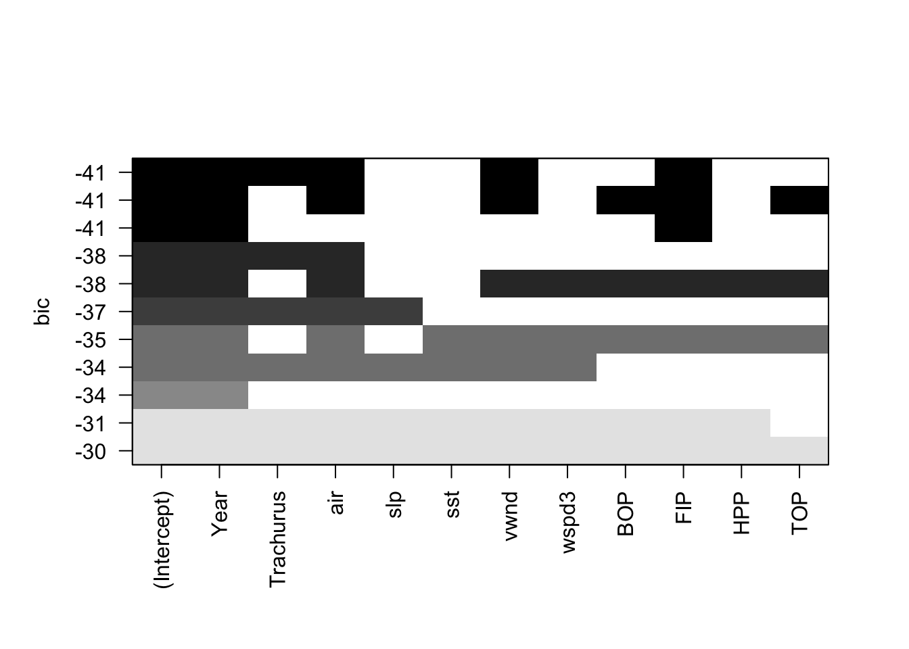
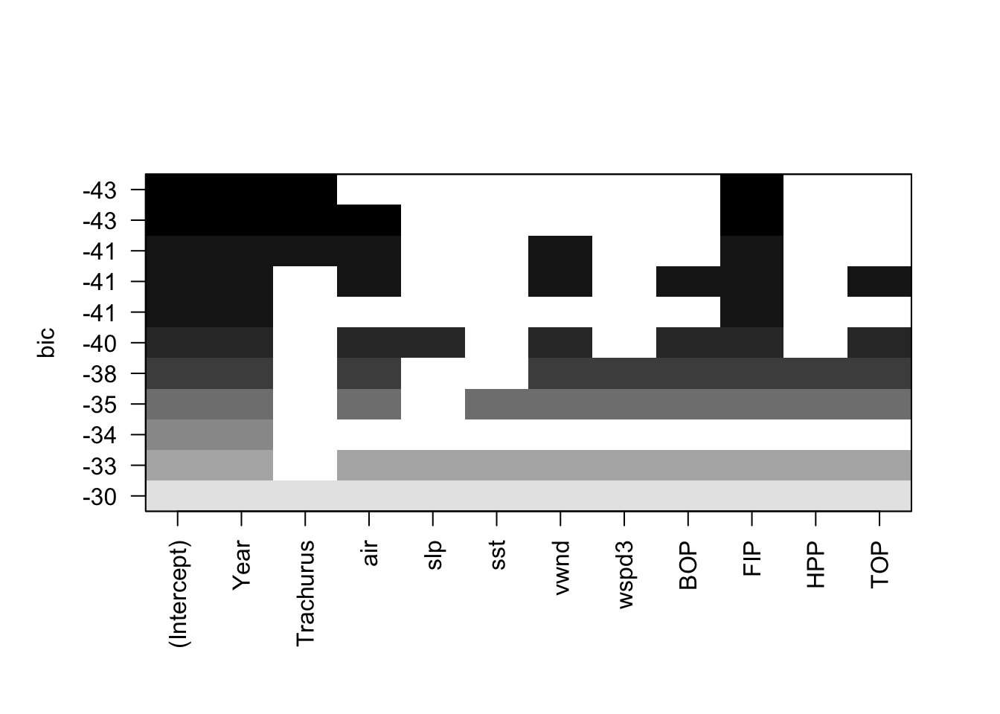
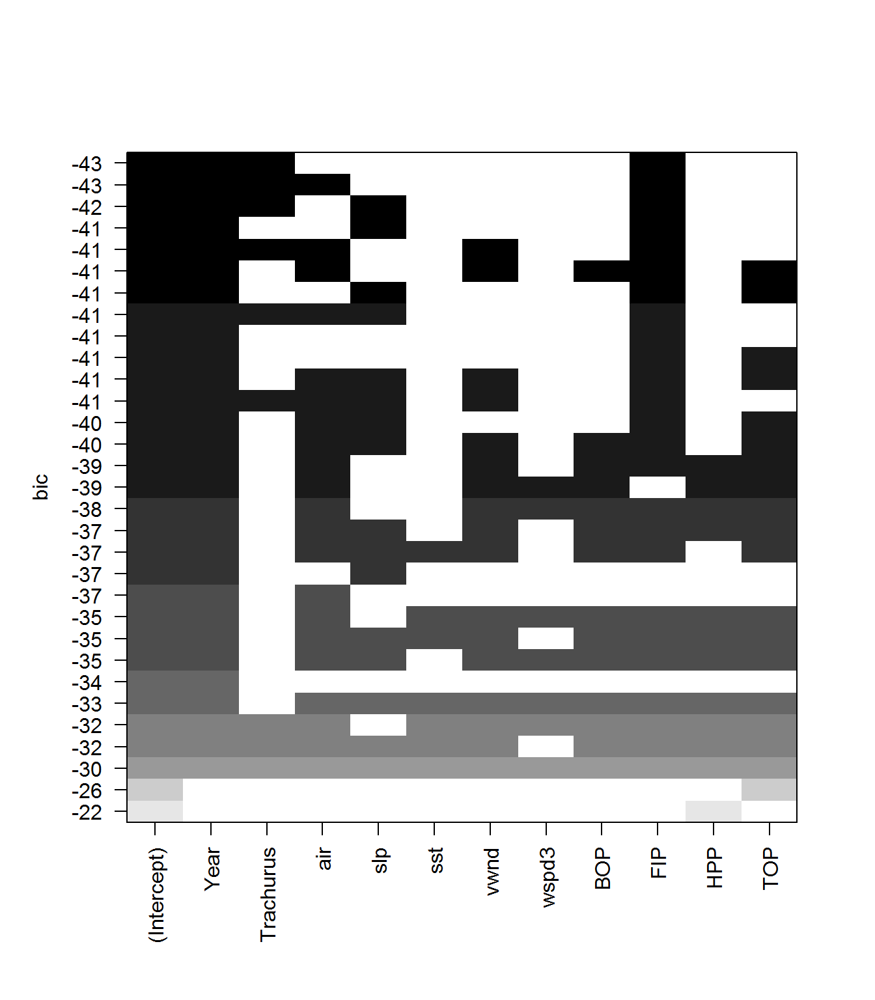
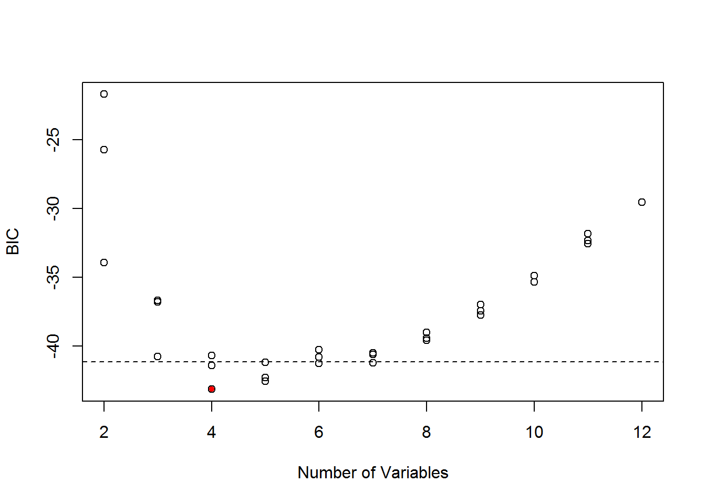
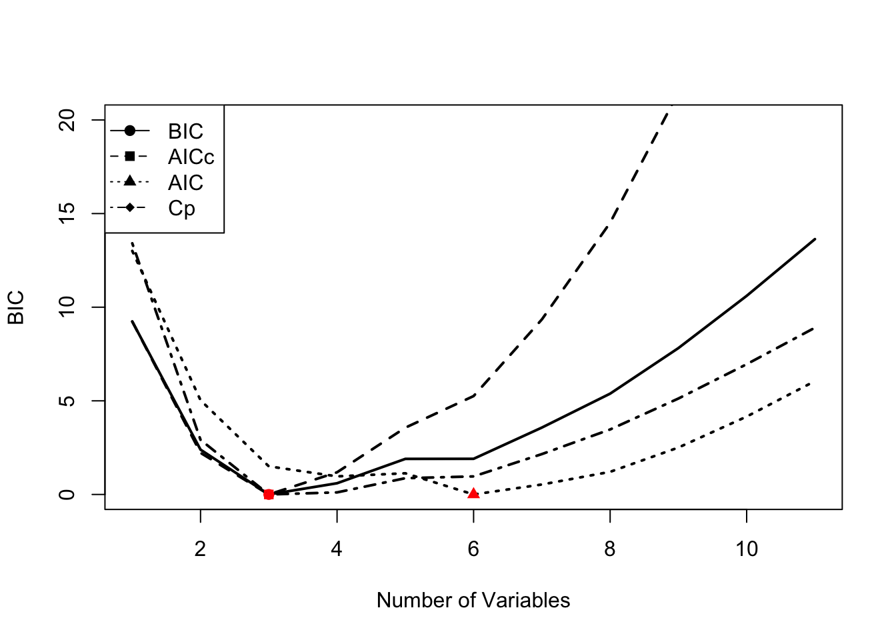
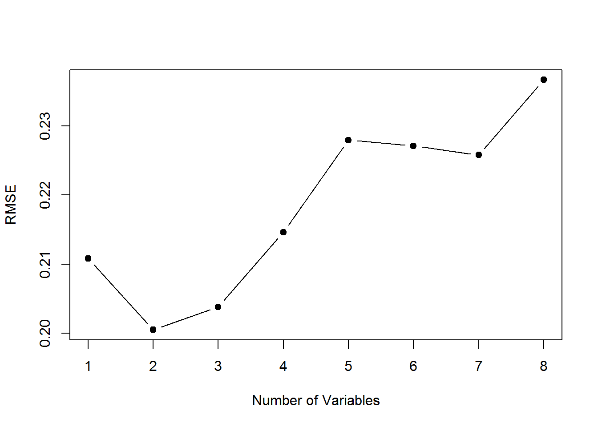
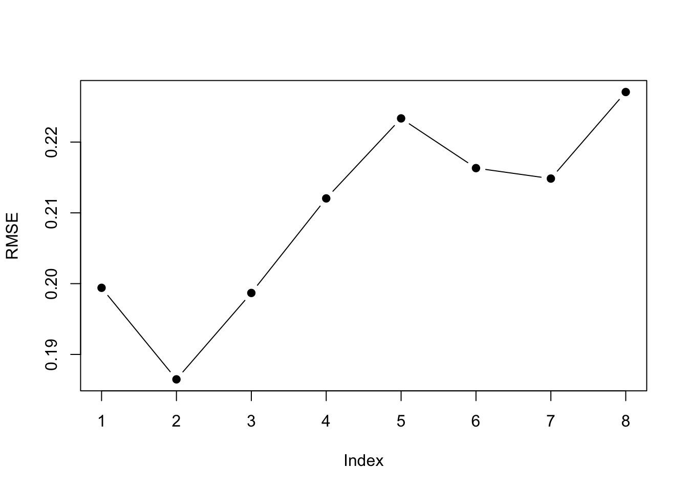

6.3 Variable Selection
In this chapter, I will illustrate developing a forecasting model using a multivariate regression (MREG). I will show the variable selection approach that Stergiou and Christou used to develop MREG models. More background on the methods discussed in this chapter can be found in the references in the endnotes.1 2 3 4 5.
A multivariate linear regression model with Gaussian errors takes the form:
\[\begin{equation} \begin{gathered} x_t = \alpha + \phi_1 c_{t,1} + \phi_2 c_{t,2} + \dots + e_t \\ e_t \sim N(0,\sigma) \end{gathered} \end{equation}\]In R, we can fit this model with lm(), which uses ordinary least squares (OLS). For model selection (determining what explanatory variables to include), there are a variety of approaches we can take. I will show approaches that use a few different packages.
library(ggplot2)
library(MASS)
library(car)
library(glmnet)
library(Hmisc)
library(stringr)
library(caret)
library(leaps)
library(forecast)
library(relaimpo)6.3.1 Model selection with stepwise variable selection
Stergiou and Christou state that the covariates to include were selected with stepwise variable selection. Stepwise variable selection is a type of automatic variable selection. Stepwise variable selection has many statistical problems and the problems are worse when the covariates are collinear as they are in our case (see this link for a review of the problems with stepwise variable selection). The gist of the problem is one of over-fitting. A stepwise selection procedure will tend to choose variables that, by chance, have large coefficients. With only 23 data points and high collinearity, this is likely to be a rather large problem for our dataset. As we saw, collinearity tends to cause very large positive effect sizes offset by large negative effect sizes. However I use stepwise variable selection here to replicate Stergiou and Christou. I will follow this with an example of other more robust approaches to model selection for linear regression.
Stergiou and Christou do not give specifics on how they implemented stepwise variable selection. Stepwise variable selection refers to a forward-backward search, however there are many ways we can implement this and different approaches give different answers. The starting model in particular will have a large effect on the ending model.
step()
When using the step() function in the stats package (and the related stepAIC() function in the MASS package) , we specify the starting model and the scope of the search, i.e., the smallest model and the largest model. We set direction equal to “both” to specify stepwise variable selection. We also need to specify the selection criteria. The default is to use AIC.
Let’s start with a search that starts with a full model which has all the explanatory variables. The first argument to step() is the starting model and scope specifies the maximum and minimum models as a list. direction="both" is stepwise variable selection. trace=0 turns off the reporting.
null <- lm(anchovy ~ 1, data=df)
full <- lm(anchovy ~ ., data=df)
step.full <- step(full,
scope=list(lower=null, upper=full),
direction="both", trace = 0)
step.full##
## Call:
## lm(formula = anchovy ~ Year + air + vwnd + BOP + FIP + TOP, data = df)
##
## Coefficients:
## (Intercept) Year air vwnd BOP
## -5.6500 0.1198 3.7000 0.1320 1.8051
## FIP TOP
## 1.0189 -1.7894We can also apply step() with the caret package:
step.caret <- caret::train(anchovy ~ ., data = df,
method = "lmStepAIC",
direction = "both",
trace = FALSE
)## Warning: attempting model selection on an essentially perfect fit is
## nonsense
## Warning: attempting model selection on an essentially perfect fit is
## nonsensestep.caret$finalModel##
## Call:
## lm(formula = .outcome ~ Year + air + vwnd + BOP + FIP + TOP,
## data = dat)
##
## Coefficients:
## (Intercept) Year air vwnd BOP
## -5.6500 0.1198 3.7000 0.1320 1.8051
## FIP TOP
## 1.0189 -1.7894Note that method="lmStepAIC" in the train() function will always start with the full model.
The AIC for this model is -19.6. This is a larger model than that reported in Table 3 (page 119) of Stergiou and Christou. The model in Table 3 includes only Year, Trachurus catch, SST, and FIP. The model selected by step() starting from the full model includes Year, Trachurus catch, air temperature, vertical wind, BOP, FIP and TOP.
Let’s repeat but start the search with the smallest model.
null <- lm(anchovy ~ 1, data=df)
full <- lm(anchovy ~ ., data=df)
step.null <- step(null,
scope=list(lower=null, upper=full),
direction="both", trace = 0)
step.null##
## Call:
## lm(formula = anchovy ~ Year + FIP + Trachurus + air, data = df)
##
## Coefficients:
## (Intercept) Year FIP Trachurus air
## -0.51874 0.08663 0.81058 -0.28602 1.62735This model has an AIC of -18.7. This AIC is larger (worse), which illustrates that you need to be careful how you set up the search. This selected model is very similar to that in Table 3 except that air temperature instead of SST is selected. Air temperature and SST are correlated, however.
The air temperature is removed from the best model if we use BIC as the model selection criteria. This is done by setting k=log(n) where \(n\) is sample size.
step.null.bic <- step(null,
scope=list(lower=null, upper=full),
direction="both", trace = 0,
k=log(nrow(df)))
step.null.bic##
## Call:
## lm(formula = anchovy ~ Year + FIP + Trachurus, data = df)
##
## Coefficients:
## (Intercept) Year FIP Trachurus
## 2.81733 0.08836 0.98541 -0.30092We can also do stepwise variable selection using the leaps package. However, the algorithm or starting model is different than for step() and the results are correspondingly different. The results are similar to step() starting from the full model but not identical. See the next section for a brief introduction to the leaps package.
models <- leaps::regsubsets(anchovy~., data = df, nvmax =11,
method = "seqrep", nbest=1)
plot(models, scale="bic")
leaps()
We can use the leaps package to do a full search of the model space. The function leaps::regsubsets() will find the nbest models of size (number of explanatory variables) 1 to nvmax using different types of searches: exhaustive, forward, backward, and stepwise variable selection. We can then plot these best models of each size against a criteria. such as BIC. leaps allows us to plot against BIC, Cp (asymptotically the same as AIC and LOOCV), \(R^2\) and adjusted \(R^2\). Each row in the plot is a model. The dark shading shows which variables are in the model. On the y-axis, farther away from the x-axis is better, so the models (rows) at the top of the plot are the best models.
Let’s start with an exhaustive search and show only the best model of each size, where size is the number of explanatory variables in the model.
models <- leaps::regsubsets(anchovy~., data = df,
nvmax = 11, nbest=1,
method = "exhaustive")
plot(models, scale="bic") We see that when we use BIC as the selection criteria, the best model has Year, Trachurus, and FIP.
Let’s look at more than one model for each model size. Let’s take the top 3 models for each model size and look at their BICs.
models <- leaps::regsubsets(anchovy~., data = df,
nvmax = 11, nbest=3,
method = "exhaustive")
plot(models, scale="bic") We can plot the BIC for each size of model also.
smodels = summary(models)
nvar <- apply(smodels$which,1,sum)-1
plot(nvar, smodels$bic, xlab = "Number of Variables", ylab = "BIC")
min.bic <- which.min(smodels$bic)
points(nvar[min.bic], smodels$bic[min.bic], pch = 20, col = "red")
abline(h = smodels$bic[min.bic]+2, lty=2)
These two plots show that there are many models within 2 of the top model. All the best models have Year and FIP, but there are many different 3rd and 4th variables that can be added and give a similar BIC. Interesting SST does not appear in any of the top models, while it was selected by Stergiou and Christou. This suggests that they computed the yearly SST values slightly differently than I did. My remote sensing data source was slightly different and that might be the cause.
6.3.1.1 Comparison of models chosen by AIC, AICc and BIC
step() uses AIC instead of the AICc (corrected for small sample size). In our case, \(n=23\) is fairly small and using AICc would be better suited for such a small dataset. leaps does not return AIC or AICc, but we can compute them. Note that Mallow’s Cp asymptotically has the same ordering as AIC, but \(n=23\) is small and it does not have the same ordering as AIC in our case.
First we use summary() to get a matrix showing the best model of each size. This matrix shows what variable is in the best model of each size. Note that this best model does not depend on the metric (BIC, AIC, etc) because we are looking at models with the same number of variables. The metric affects the penalty for different number of variables and thus only affects the models choice when we compare models of different sizes.
models <- leaps::regsubsets(anchovy~., data = df,
nvmax = 11, nbest=1,
method = "exhaustive")
smodels <- summary(models)
head(smodels$which[,1:10])## (Intercept) Year Trachurus air slp sst vwnd wspd3 BOP FIP
## 1 TRUE TRUE FALSE FALSE FALSE FALSE FALSE FALSE FALSE FALSE
## 2 TRUE TRUE FALSE FALSE FALSE FALSE FALSE FALSE FALSE TRUE
## 3 TRUE TRUE TRUE FALSE FALSE FALSE FALSE FALSE FALSE TRUE
## 4 TRUE TRUE TRUE TRUE FALSE FALSE FALSE FALSE FALSE TRUE
## 5 TRUE TRUE TRUE TRUE FALSE FALSE TRUE FALSE FALSE TRUE
## 6 TRUE TRUE FALSE TRUE FALSE FALSE TRUE FALSE TRUE TRUENext we compute AIC and AICc from BIC. k is the number of parameters. We need to add one more parameter for the estimated variance.
k <- apply(smodels$which,1,sum)+1
mod.aicc <- smodels$bic+k*(2+(2*k+2)/(23-k-1))-log(23)*k
mod.aic <- smodels$bic+k*2-log(23)*kNow we will plot the metrics for each model size. BIC, AICc and Mallow’s Cp all chose models with an intercept and 3 variables: Year, Trachurus and FIP. AIC selects a much larger model, however with \(n=23\), AICc would be a better choice. 
To find the best model, find the row of the smodels matrix where AICc is the smallest. For example, here is the best model with AICc.
rmin <- which(mod.aicc==min(mod.aicc))
colnames(smodels$which)[smodels$which[rmin,]]## [1] "(Intercept)" "Year" "Trachurus" "FIP"In comparison, the best model with AIC is larger.
rmin <- which(mod.aic==min(mod.aic))
colnames(smodels$which)[smodels$which[rmin,]]## [1] "(Intercept)" "Year" "air" "vwnd" "BOP"
## [6] "FIP" "TOP"6.3.2 Model selection with cross-validation6
Variable selection (forward, backward, stepwise) is known to overfit models and variables will be chosen that just happen to have high correlation with your response variable for your particular dataset. The result is models with low out-of-sample predictive accuracy. Cross-validation is a way to try to deal with that problem.
Model selection with cross-validation estimates the out-of-sample predictive performance of a process for building a model. So for example, you could use cross-validation to ask the question, “If I select a best model with AIC does that approach led to models with better predictive performance over selecting a best model with BIC?”.
The basic idea behind cross-validation is that part of the data is used for fitting (training) the model and the left-out data is used for assessing predictions. You predict the left-out data and compare the actual data to the predictions. There are two common types of cross-validation: leave-one-out cross-validation (LOOCV) and k-fold cross-validation.
Leave-one-out cross-validation (LOOCV) is a cross-validation where you leave one data point out, fit to the rest of the data, predict the left out data point, and compute the prediction error with prediction minus actual data value. This is repeated for all data points. So you will have \(n\) prediction errors if you have \(n\) data points. From these errors, you can compute various statistics. Root mean squared error (RMSE), mean squared error (MSE), and mean absolute error (MAE) are common.
k-fold cross-validation is a cross-validation where you divide the data into k equal fractions. The model is fit k times: each fraction is treated as a test data set and the other k-1 fractions are used as the training data. When the model is fit, you predict the data in the test data and compute the prediction errors. Then you’ll compute the statistics (RMSE, MSE, etc) from the errors from all k training sets. There are many different ways you can split your data into k fractions. Thus one often repeats this process many times and uses the average. This is called repeated cross-validation.
Example code
Let’s see an example of this using models fit via stepwise variable selection using leaps::regsubsets().
Let’s start by defining a predict function for regsubsets objects7.
predict.regsubsets <- function(object, newdata, id, ...) {
form <- as.formula(object$call[[2]])
mat <- model.matrix(form, newdata)
coefi <- leaps:::coef.regsubsets(object, id = id)
mat[, names(coefi)] %*% coefi
}Next we set up a matrix that defines the folds. Each row has numbers 1 to k (folds) which specify which data points are in the test set. The other (non-k) data points will be the training set. Each row of folds is a different replicate of the repeated cross-validation.
nfolds <- 5
nreps <- 20
folds <- matrix(NA, nreps, nrow(df))
for(i in 1:nreps)
folds[i,] <- sample(rep(1:nfolds, length = nrow(df)))Now we can use df[folds[r,]==k] to specify the test data for the k-th fold of the r-th replicate. And df[folds[r,]!=k] is the training dataset for the k-th fold of the r-th replicate. The fold jargon is just another word for group. We divide the data into k groups and we call each group a fold.
Next we set up a matrix to hold the prediction errors. We will have prediction errors for each fold, each replicate, and each variable (columns).
nvmax <- 8
cv.errors <- matrix(0, nreps*nfolds, nvmax)Now, we step through each replicate and each fold in each replicate. We find the best fit with regsubsets() applied to the training set for that replicate. Then we predict using that best fit to the test data for that replicate. We compute the errors (prediction minus data) and store. When we are done, we compute the RMSE (or whatever metric we want).
for(r in 1:nreps){
for (k in 1:nfolds) {
traindat <- df[folds[r,]!=k,]
testdat <- df[folds[r,]==k,]
best.fit <- leaps::regsubsets(anchovy ~ ., data=traindat, nvmax = nvmax, method = "seqrep")
for (i in 1:nvmax) {
pred <- predict.regsubsets(best.fit, testdat, id = i)
cv.errors[r+(k-1)*nreps, i] <-
mean((testdat$anchovy - pred)^2)
}
}
}
rmse.cv <- sqrt(apply(cv.errors, 2, mean, na.rm=TRUE))
plot(1:nvmax, rmse.cv, pch = 19, type = "b",xlab="Number of Variables", ylab="RMSE")
The model size with the best predictive performance is smaller, intercept plus 2 variables instead of intercept plus 3 variables. This suggests that we should constrain our model size to 2 variables (plus intercept). Note, that with a 5-fold cross-validation, we were fitting the models to 19 data points instead of 23. However, even with a 23-fold cross-validation (Leave One Out CV), a model with 2 variables has the lowest RMSE.
The best fit 2 variable model has Year and FIP.
best.fit <- leaps::regsubsets(anchovy ~ ., data=traindat, nvmax = 2, method = "seqrep")
tmp <- summary(best.fit)$which
colnames(tmp)[tmp[2,]]## [1] "(Intercept)" "Year" "FIP"Cross-validation with caret package
The the train() function in the caret package allows us to fit and cross-validate model sets easily. trainControl specifies the type of cross-validation and tuneGrid specifies the parameter over which cross-validation will be done (in this case the size of the model).
library(caret)
# Set up repeated k-fold cross-validation
train.control <- trainControl(method = "repeatedcv", number=5, repeats=20)
# Train the model
step.model <- train(anchovy~., data = df,
method = "leapSeq",
tuneGrid = data.frame(nvmax = 1:nvmax),
trControl = train.control
)
plot(step.model$results$RMSE, pch = 19, type = "b", ylab="RMSE") The $results part of the output shows us the cross-validation metrics. Best depends on the metric we use. A 2-parameter model is best for all the error metrics except R-squared.
step.model$results| nvmax | RMSE | Rsquared | MAE | RMSESD | RsquaredSD | MAESD |
| 1 | 0.199 | 0.857 | 0.17 | 0.0674 | 0.122 | 0.0611 |
| 2 | 0.186 | 0.875 | 0.163 | 0.0492 | 0.0989 | 0.0477 |
| 3 | 0.199 | 0.823 | 0.164 | 0.0546 | 0.164 | 0.0495 |
| 4 | 0.212 | 0.804 | 0.174 | 0.0587 | 0.178 | 0.0552 |
| 5 | 0.223 | 0.779 | 0.183 | 0.0551 | 0.188 | 0.0531 |
| 6 | 0.216 | 0.782 | 0.178 | 0.0655 | 0.183 | 0.0589 |
| 7 | 0.215 | 0.777 | 0.178 | 0.063 | 0.206 | 0.0563 |
| 8 | 0.227 | 0.767 | 0.193 | 0.0612 | 0.208 | 0.0572 |
The best 2-parameter model has Year and FIP.
coef(step.model$finalModel, id=2)## (Intercept) Year FIP
## -0.01122016 0.07297605 1.04079295James, Gareth, Daniela Witten, Trevor Hastie, and Robert Tibshirani. 2014. An Introduction to Statistical Learning: With Applications in R. Springer Publishing Company, Incorporated.↩
Harrell, Frank. 2015. Regression modeling strategies. Springer.↩
Raftery, A. E. 1995. Bayesian model selection in social research. Sociological Methodology, 25, 111-163.↩
This section and the R code was adapted from and influenced by Chapter 6 material in Introduction to Statistical Learning by James, Witten, Hastie and Tibshirani. They have an online course and (free) textbook at http://www-bcf.usc.edu/~gareth/ISL/ .↩
This section and the R code was adapted from and influenced by Chapter 6 material in Introduction to Statistical Learning by James, Witten, Hastie and Tibshirani. They have an online course and (free) textbook at http://www-bcf.usc.edu/~gareth/ISL/ .↩
This function was copied from the Introduction to Statistical Learning material.↩